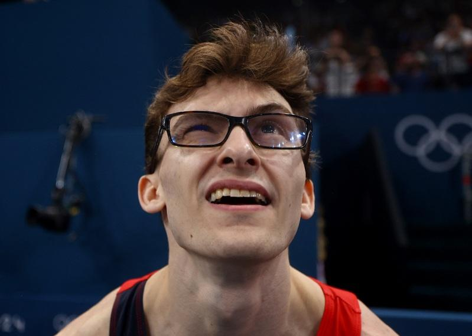
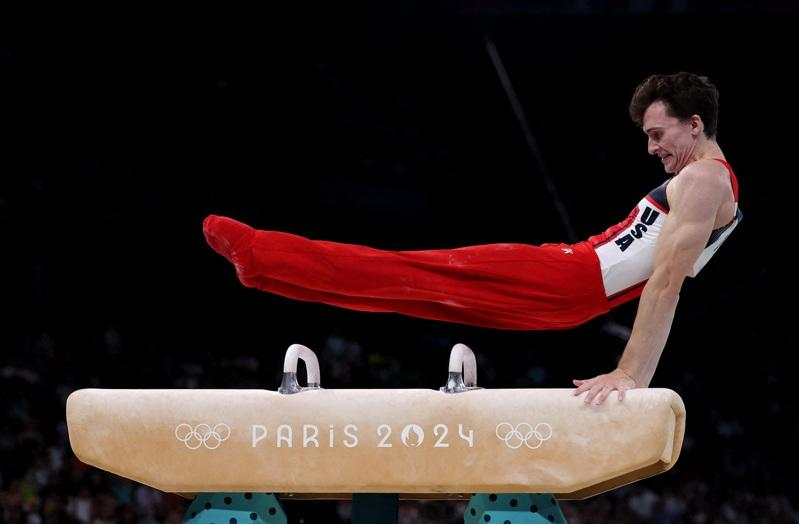
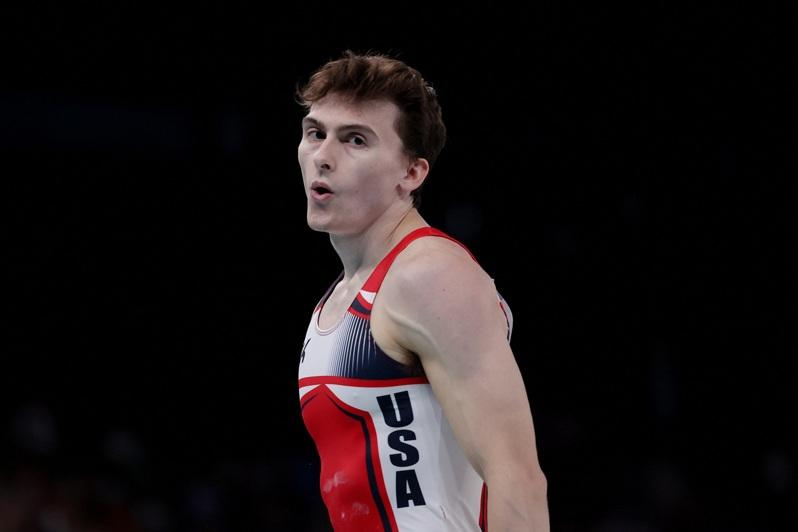

巴黎奥运美国男子体操队窜出新星，看似书呆子的鞍马选手内多罗西克（Stephen Nedoroscik），脱下黑框眼镜之后，上场有如超级英雄拯救美国，使他成为网络迷因热门人物。
25岁的内多罗西克7月29日在男子团体赛的鞍马项目，拿下14.866高分，帮助美国队夺铜，这是美国男子体操队暌违16年再度拿下奖牌。8月3日他在个人赛登场，以15.300分再拿一面铜牌。
团体赛当天，鞍马最后一项登场，内多罗西克在场边等候时，闭目养神好像在睡觉，加上戴着黑框眼镜，外型看起来更像是普通人，吸引镜头的关注。


轮到他上场时，一脱掉眼镜和外套，他又化身鞍马上的顶尖选手，被转播单位国家广播公司（NBC）誉为超级英雄「超人」。
内多罗西克患有斜视，必须戴上眼镜帮助聚焦，但当他上场比赛的时候，他选择脱下眼镜，用双手感受鞍马上的一切。他对媒体表示，「我在鞍马上没有用到我的眼睛，我用我的双手去看」。
美国媒体形容他有如超级英雄「超人」克拉克肯特（Clark Kent），戴上眼镜的时候就像一般人，脱下眼镜时拯救世界。内多罗西克颇具宅男特质，他毕业自名校宾州州立大学电机系，体操之外的最大兴趣是玩魔术方块。
媒体好奇，他等待上场前的闭目养神，看起来很像在睡觉，内多罗西克夺牌之后回答，他其实是在呼吸练习，在脑中一遍又一遍想像着场上要做的动作。
至于他如何克服紧张，在关键时刻获得高分，帮助美国队拿下铜牌，他向媒体表示，克服压力的秘诀是享受当下，「我已经做了一百万次，我只是尽全力去享受每个动作的每一刻」。
对于网络上突然暴涨的知名度，内多罗西克表示，能够成为戴眼镜的代表人物，他感到很高兴。
巴黎奥运热话题
- 乒乓／台湾男团不敌日本止步8强 庄智渊奥运之旅结束
- 法撑竿跳选手下体打落横杆出局 引来色情网站开价
- 全红婵丑拖鞋、黄雨婷发夹卖翻 有商家2天接60万个订单
- 日本羽球女神红了 志田千阳被挖角进演艺圈
- 「美到像AI」匈牙利21岁女剑客脱下面罩惊艳全场